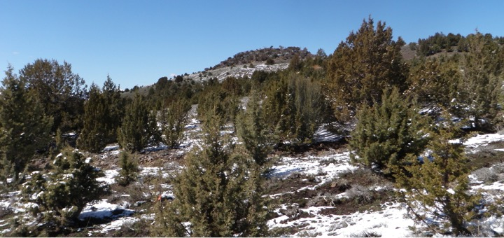

Title: Climate moderates potential shifts in groundwater recharge with Pinyon-Juniper land cover changes across the western U.S
Authors: Niemeyer, R.J., T.E. Link, M.S. Seyfried, and R. Heinse
Journal: Ecohydrology (in prep)
The goal of this research is in some ways a response to the "streamflow paradox" described in the previous page. Specifically the goal is to understand if differences in climate across pinyon and juniper cover in the Western U.S. impacts the potential for streamflow to increase with pinyon/juniper removal or decrease with pinyon/juniper encroachment.
Abstract: Pinyon-Juniper (PJ) cover has increased up to 10-fold in many parts of the western U.S. in the last 140+ years. Some claim PJ removal will increase streamflow, but this assertion is contested due to several paired-catchment studies revealing no appreciable gain in streamflow after PJ removal. These paired-catchment studies were predominantly conducted in the southern range of PJ cover, where a large portion of the precipitation occurs in the summer during high evaporative demand. Much of the PJ cover is in the northern and western range of PJ cover, where the majority of the precipitation occurs in the winter. To ascertain if differences in precipitation timing and amount affect the potential for streamflow to increase with PJ removal, we simulated tree and grass cover at a 4 km resolution and daily time step with the Hydrologiska Byråns Vattenbalansavdelning (HBV) model. Forcing data included 1981 to 2010 PRISM precipitation and temperature data across the range of PJ cover in the western U.S. We used groundwater recharge as a proxy for the potential for an increase in streamflow. Comparing three previous paired catchment studies and a paired soil moisture plot study with our simulated groundwater recharge revealed good correlation between measured increase in streamflow or groundwater recharge and our simulated increases in groundwater recharge. For sites in the northern and western range of PJ cover where precipitation predominantly occurs in the winter, difference in groundwater recharge between simulated grass and tree cover was 30.5 mm. Conversely, in sites in the southern range where a large portion of precipitation occurs in the summer, simulated difference in tree and grass recharge was 6.7 mm. Our results reveal that only 29.4% sites, compared to an estimated 45% of sites based on the amount precipitation alone, will see an potential meaningful increase in streamflow with PJ removal.
The article is currently being edited and will be submitted in early Fall 2016.
